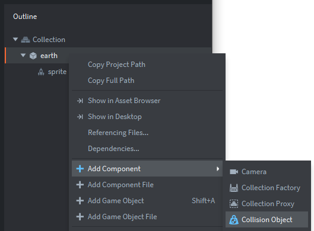
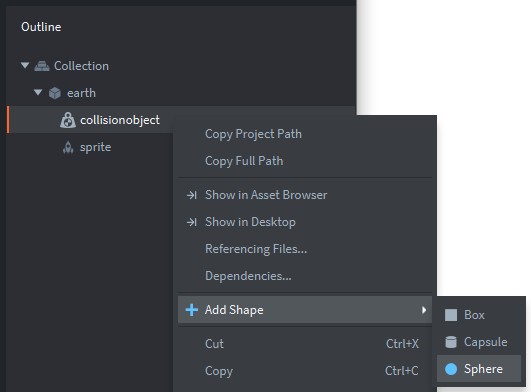
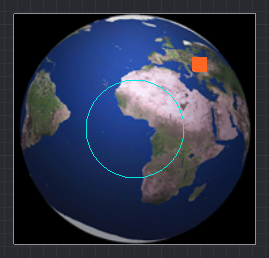

Tutorials for 2D games projects
Incoming | Creating the game objects: earth's collision object
- In the assets panel, in the 'main' folder, double click, 'main.collection'.
- In the outline panel, inside the 'Collection', right click, the 'earth' game object and select, 'Add Component', 'Collision Object'.
- In the properties panel, set the 'Type' property to, 'Kinematic' - we don't want comets bouncing off the earth!

- In the outline panel, right click, 'collisionobject' and select, 'Add Shape', 'Sphere'.
Remember to press F and use the mouse wheel to zoom out so you can see the sphere.

- Click in the editor panel, and using the resize object tool drag the blue/orange handle to create a suitable impact zone. Be careful with this stage that you are changing the sphere and not the game object itself.

The game will have the best feel if this sphere is not as big as the earth itself. You want the comets to impact on the earth, not the edge of the sprite. This is about right:

That's the earth object complete. There is no code for the earth object because we don't actually want the earth to do anything except animate. When comets collide with the earth they will disappear, so the code for that should be on the comet object. Let's start making the comets. Stage 3c >
 Craig'n'Dave | Version 1.3
Craig'n'Dave | Version 1.3